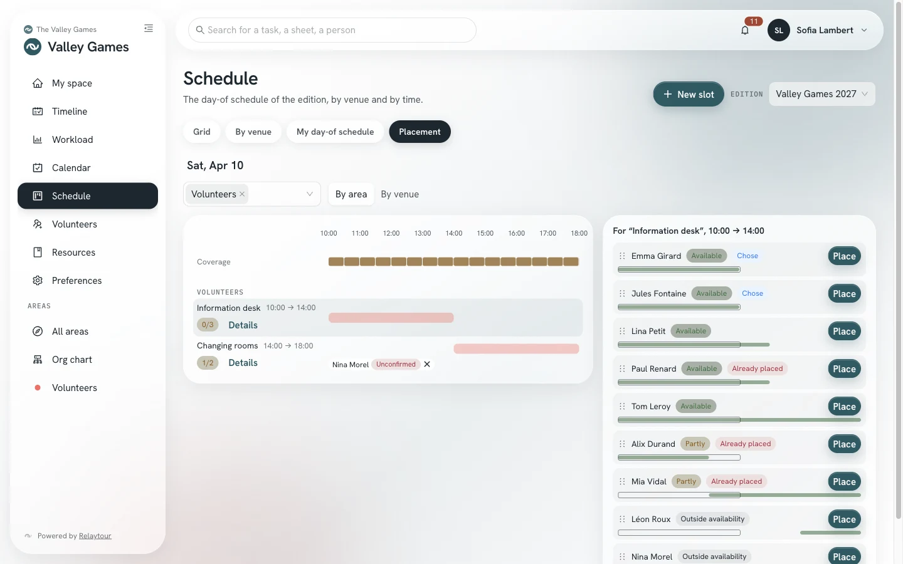

A small team prepares a relay race that lasts one day. This use case shows that a small team uses only part of Relaytour.
This use case shows one path among others. Each step points to the user guide that describes the screen in detail.
The case
One day, one venue and volunteers for each time slot
The running club of the sample organization holds a six-hour relay race every autumn, on a single course. Four club members prepare it.
On race day, about thirty volunteers take turns at the welcome desk, the timing, the refreshment stand and the clean-up. Most of them have no account in Relaytour.
Before you start
What you set up
The race gets its own activity, separate from the club season. It has its own team, its schedule and its volunteers. An organization admin creates it, then appoints one person as activity admin.
A light activity
/<activity>/admin/activites
“Event” kindEach yearly race becomes an edition. The next edition carries over its tasks.
Two areas“Organization” covers the course, the permits and the timing. “Welcome and refreshments” covers the welcome of teams and volunteers.
Volunteers moduleIt opens volunteer calls and the “Placement” view of the schedule.
Default phasesThe four phases offered are enough for a race of this format.
The timings below are indicative. They count back from race day.
1. Three months before: create the edition
The activity admin creates a one-day edition. If the team already keeps its tasks in a spreadsheet, it imports them from the timeline. The next year, it carries over the tasks of this edition.
The admin creates the race venue. The team then creates one slot per shift: welcome, timing, refreshments, clean-up. Each slot states the helpers wanted and the public instructions.
The admin opens a call on the whole edition and shares its address: club poster, social networks, newsletter. The public form of the team also shows this address.
The team accepts the applications, then places available people in the slots that are not full. A list of volunteers kept elsewhere, such as an online form, imports into the same schedule.
The team follows the schedule and checks off its tasks from the app installed on their phones. After the race, it writes down in a sheet what changes for next year.
The “Placement” view of the schedule shows, for each 30-minute period, the helpers wanted and the places already filled. For the chosen slot, it ranks volunteers by their availability. The “Place” button creates an unconfirmed place for them.

The “Placement” view of the schedule, in the sample organization.
A person who gave an address and agreed to be notified receives a personal link at their first place. They then confirm with a button on their volunteer page.
Good practices
Three habits for a small team
Instructions without personal contact details
The instructions of a slot are public. Write the meeting point and the outfit there, with a role address of the club rather than a personal number.
Realistic helper numbers
State the number of volunteers each slot really needs. Extra applications join the waiting list, and the team accepts them if needed.
A single admin
One activity admin is enough. The other team members write in their area: they create slots, open calls and place volunteers.
Keep it simple
What you do not need
The “Calendar”, “Documents” and “Ranking” modules stay off. A team of four people does not need a shared calendar.
The org chart, shared tasks and custom phases serve large teams. Your race does without them.